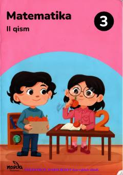

3M3-sinf o'quvchilari uchun matematika fanidan ikkinchi qism darsligi.
Mazkur darslik umumiy o'rta ta'lim maktablarining 3-sinf o'quvchilari uchun mo'ljallangan bo'lib, matematika fanidan ikkinchi qism materiallarini o'z ichiga oladi. Kitobda katta sonlarga ko'paytirish, bo'lish, qoldqli bo'lish amallari hamda shakllarning perimetri va maydonini topish mavzulari yoritilgan. Shuningdek, o'quvchilarning mantiqiy fikrlashini rivojlantiruvchi qiziqarli masalalar va topshiriqlar berilgan.